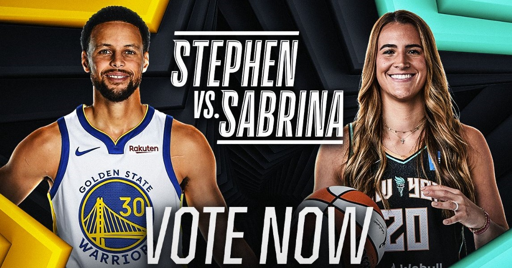

Es un reto difícil de enmarcar, pero sin duda histórico. Dos de los mejores tiradores de todos los tiempos cara a cara, un hombre y una mujer dispuestos a dar otro paso de gigante en la lucha por el respeto y la igualdad en el mundo del deporte y la sociedad. El duelo entre Stephen Curry y Sabrina Ionescu, la crème de la crème triplista en la NBA y la WNBA, promete marcar un antes y un después en este All Star 2024. La cita es el sábado 17, madrugada del domingo 18 en España, después del concurso de triples tradicional de la noche reservada al espectáculo más puro en el fin de semana de las estrellas. Será, sin duda, el gran polo de atracción de la jornada, e incluso de todas las festividades de la 73ª edición del All Star, que se celebra en Indianápolis, hogar de los Indiana Pacers.
"Habrá algún niño o niña que no ha visto demasiados partidos de la WNBA y que sí verá esto, y quizás pueda soñar entonces con lanzar algún día ante su ídolo", apuntaba Ionescu en la previa al evento. "Somos una pequeña pieza en este cambio de narrativa, y no hay guion. No lo hacemos para rellenar una casilla, es algo orgánico y por lo que estamos muy entusiasmados", agregó la jugadora de las New York Liberty.
A sus 26 años, el curso pasado, la estadounidense se convirtió en una sensación viral después de batir todos los récords del actual formato de concurso de triples, que comparten la NBA y la WNBA. Ionescu sumó 37 de 40 puntos posibles, y llegó a meter 20 tiros de tres consecutivos para levantar la corona en el All Star 2023 de la liga estadounidense femenina. Poco después, lanzó un mensaje en redes sociales retando a Curry, una broma que desencalló los engranajes que han desembocado en el novedoso y esperado formato.
